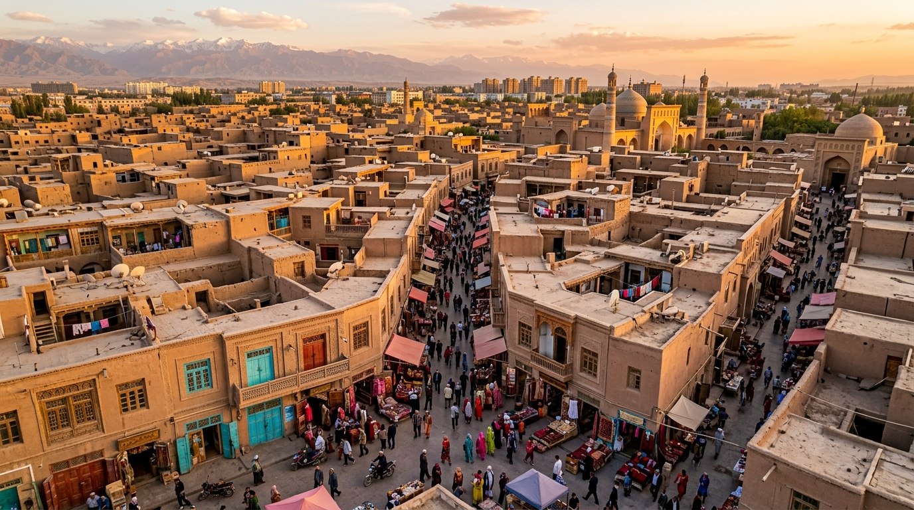
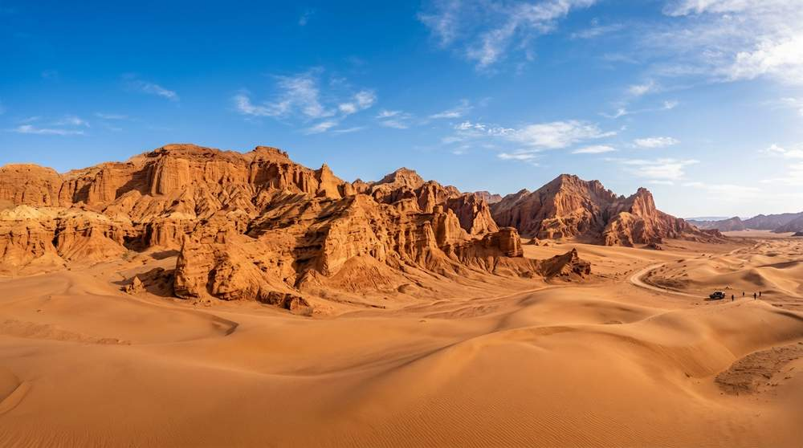
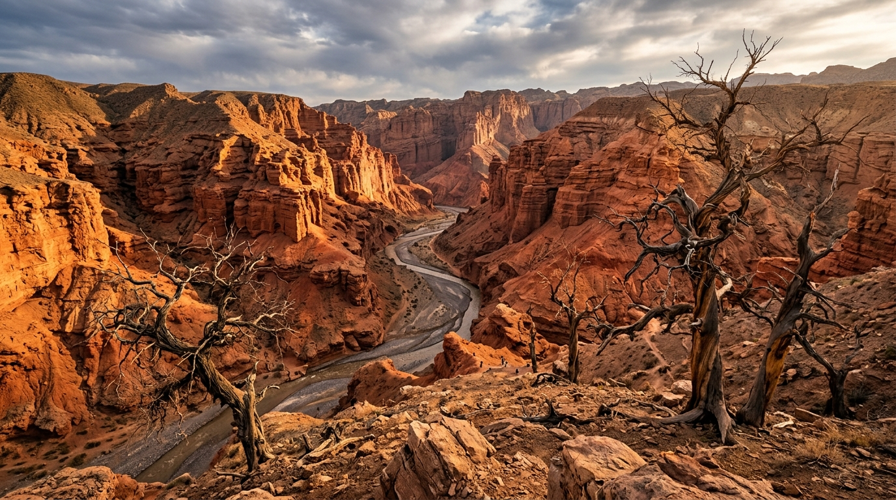
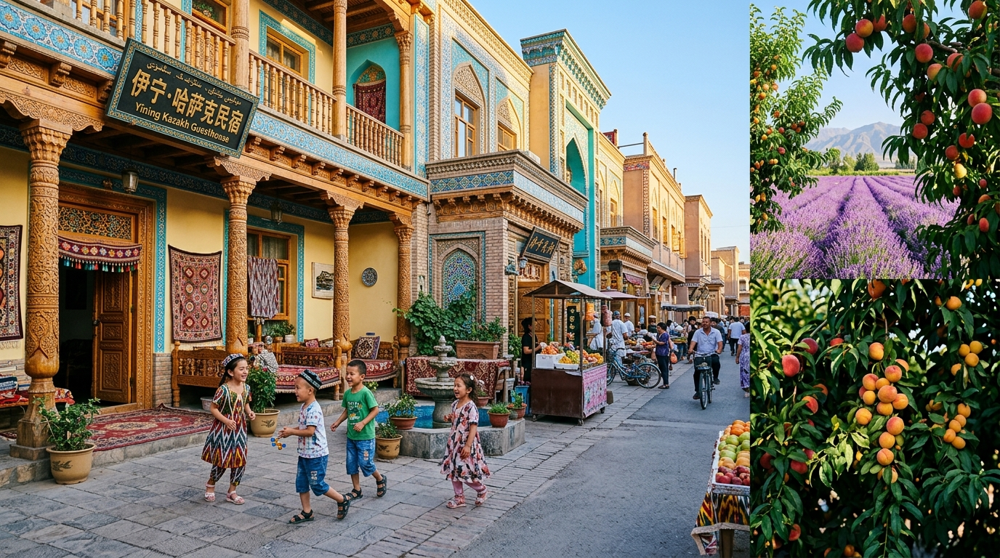
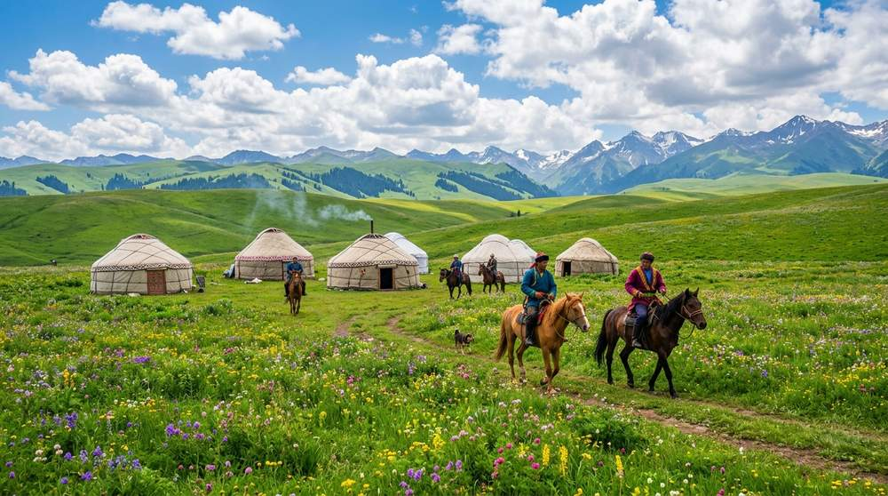

Day 1 · 初识喀什古城
7月20日：降落古丝路十字路口
🌤️ 天气与摄影穿搭建议
今日天气：晴，22°C ~ 35°C。紫外线较强，高温干热。
📸 穿搭指引：老城以金黄土木泥砖色为主，女生极力推荐穿红色或纯白色的复古民族风棉麻长裙，搭配草帽、墨镜，出片率极高！鞋子建议平底单鞋，方便走路。
🌄 景色大观
踏上喀什的红土古街，耳畔是叮咚的铜器敲击声与维吾尔乐曲。这里有西域最完整的生土泥砖民居群，斑驳的蓝底木门和满街晾晒的花色丝绸织毯，仿佛步入一幅活着的古丝路异国长卷。
🎓 历史战略研学 · 丝路要塞
战略地位：喀什古称“疏勒”，地处塔克拉玛干沙漠西缘、葱岭（帕米尔高原）东麓。它是古代中国通往中亚、西亚和南亚的十字交汇路口。有了疏勒的稳定，才有了陆上丝绸之路千百年的繁荣昌盛，是祖国西北大门不可动摇的战略支点。
📖 《西游记》小说探秘
西游记中所写玄奘师徒西行翻越的那座云雾缭绕、高耸入云的“葱岭”，指的就是喀什背后的帕米尔高原。古时的疏勒是僧侣商旅在翻越险峻冰川前，修整补充水源、干粮的最重要绿洲驿站。
🍖 舌尖特色美食
汗巴扎夜市：现烤缸子肉（小茶缸炖羊肉，汤极其鲜甜）、刚出炉热气腾腾的烤包子、手工冰淇淋。

🚨 今日抢票与出行备忘
提车须知：在喀什机场提两台哈弗 H6，一定要仔细录制车身外观视频。今晚早睡准备迎接第二天的全天徒步。
Day 2 · 喀什古城深度体验
7月21日：百年茶馆的悠闲与大巴扎的沸腾
🌤️ 天气与摄影穿搭建议
今日天气：晴间多云，23°C ~ 34°C。紫外线强，下午偏热。
📸 穿搭指引：由于要在茶馆和巴扎拍照，推荐穿亮黄色、橙色或宝蓝色的衣服，在蓝天和木雕砖墙衬托下色彩对比度极高！建议穿舒适透气的平底运动鞋，今天走路较多。
🌄 景色大观
漫步西城彩虹巷与布袋巷，黄土墙上爬满了碧绿的葡萄藤。中午阳光斜射进雕花窗格，老茶馆里老人们弹奏着热瓦普，与满院茶香融为一体。昆仑塔在傍晚亮起金光，犹如一座守护荒漠的航标。
🎓 历史战略研学 · 班超定西域
爱国史诗：东汉英雄班超“投笔从戎”，率领 36 勇士出使西域，在疏勒（喀什）驻守并抚绥西域各族长达三十年。他多次以寡敌众，平定动乱，重新打通被匈奴阻断的丝绸之路，展现了坚韧不拔的爱国热血与非凡的战略智慧。
📖 《西游记》小说探秘
真实历史中的玄奘法师（唐僧原型）在西行求法取经归国途中，曾在疏勒停留讲经。古城中高耸的土筑台基和佛寺遗址，默默见证了这位伟大的旅行家和译经大师的足迹。
🍖 舌尖特色美食
百年茶馆：点一壶当地特有的药茶（藏红花调配），搭配刚打出来的薄馕，坐在炕上听老人弹琴，别有风味。
🚨 今日抢票与出行备忘
门票说明：艾提尕尔清真寺门票现场购买即可，昆仑塔门票可现场或微信小程序买。
Day 3 · 红砂烈火的戈壁之路
7月22日：喀什 ➡️ 柯坪红沙漠 ➡️ 阿克苏
🌤️ 天气与摄影穿搭建议
今日天气：晴天，24°C ~ 36°C。沙漠温度极高，空气干热。
📸 穿搭指引：在沙漠中拍照，纯白色衣服是永远的经典，或者选择酷黑色、军绿色的机能工装风，跟红色沙丘产生极致反差美。切记备好防晒衣防晒帽，沙里风大，穿带防沙脚套的轻便鞋。
🌄 景色大观
公路两侧从荒漠渐渐化作火红的世界。柯坪红沙漠是中国唯一的红砂荒漠，在艳阳高照下，每一座红色的沙丘都像是跃动的火苗，与湛蓝的苍穹形成极强烈的色彩对比。
🎓 历史战略研学 · 红色戈壁与丝路烽燧
地理与战略：柯坪县境内分布着大量泛红的碎石荒漠与雅丹红层，是古丝绸之路北道的交通要道。这里的红沙由红泥岩与砂岩风化而成。古代戍边将士就是依靠在这片红色赤地中修筑烽燧（烽火台），为商旅指引水源，保卫丝路安全。
📖 《西游记》小说探秘
看见那一连绵无际、在太阳下发光的红砂世界，孩子们会脱口而出西游记里的“火焰山”。虽然真正的火焰山遗址在吐鲁番，但柯坪红沙漠的奇幻红色地貌，能让孩子完美带入孙悟空向铁扇公主借芭蕉扇扇灭熊熊烈火的经典场景！
🍖 舌尖特色美食
阿克苏美食：阿克苏的盐水羊肉、烤羊排非常著名。老城夜市可品尝当地的手工酸奶刨冰。

🚨 今日抢票与出行备忘
门票与抢票：红沙漠景区门票在现场购买即可。
⚠️ 极重要：今天必须在大众点评上提前订好明天温宿大峡谷的门票！
Day 4 · 震撼的地球伤痕
7月23日：阿克苏 ➡️ 温宿大峡谷 ➡️ 烈焰泉 ➡️ 库车
🌤️ 天气与摄影穿搭建议
今日天气：晴，22°C ~ 34°C。峡谷内光线折射强，避风处闷热。
📸 穿搭指引：红色峡谷雄伟深邃，亮红色或亮橘色的冲锋衣、卫衣或运动T恤能让你在谷底拍出绝美的“国家地理大片”即视感！请**必须穿厚底、高帮的防滑运动鞋或登山鞋**，谷底全是细沙和乱石，保护好脚踝。
🌄 景色大观
高耸入云的红色陡峭岩壁如神剑劈开大地，峡谷最窄处只漏出一线天光。在烈日下，坚韧的“不死胡杨”在干涸开裂的红土河道旁舒展着筑枝，展现出极其悲壮沧桑的生命之美。
🎓 历史战略研学 · 天山最高峰托木尔的地质史
科学研学：温宿大峡谷位于天山最高峰——托木尔峰（海拔 7443 米）南麓。它是数亿年来由于喜马拉雅造山运动导致地壳剧烈上升、加上天山冰川融水和山洪剧烈切割冲刷形成的“地质博物馆”。红砂绝壁的层理，刻录着地质变迁的壮丽史诗。
📖 《西游记》小说探秘
西游记里的“烈焰泉”与“火焰山”，与这里的红层峡谷以及地下间歇喷出的矿物泉有着惊人的神似。而在绝壁谷底傲然生长的“胡杨树”，被誉为“生而一千年不死，死而一千年不倒，倒而一千年不朽”，像极了西游记中顽强抗争、不畏艰难的悟空精神！
🍖 舌尖特色美食
红层路餐：中午在峡谷内无餐饮店，建议各家在哈弗 H6 后备箱备足烤馕、牛肉干和水果（库车小白杏在7月最甜最出名）。

🚨 今日抢票与出行备忘
交通提示：温宿大峡谷内部道路为干涸沙石河谷，容易陷车，两台哈弗 H6 停在景区停车场，全员换乘景区四驱区间车或包车进入！
⚠️ 极重要：今天必须在大众点评订明天库车王府的门票！
Day 5 · 古龟兹古国的人文回响
7月24日：库车王府 ➡️ 热斯坦老街 ➡️ 库车大寺
🌤️ 天气与摄影穿搭建议
今日天气：晴转多云，22°C ~ 33°C。光照适中，傍晚非常舒服。
📸 穿搭指引：老城民居和王府有很多粉蓝、浅粉色的门窗雕花，推荐穿姜黄色、纯白色或翠绿色的波西米亚风格棉麻长裙，搭配精致的耳环，在斑驳的墙壁旁极具胶片故事感。穿休闲鞋或凉鞋即可。
🌄 景色大观
清晨的库车热斯坦老街泛着金光，沿街每扇维吾尔雕花大门都漆着孔雀绿与天空蓝。两旁是卖铜壶和手工大馕的传统作坊，微风吹过，半空中洋溢着成熟无花果的清甜香味。
🎓 历史战略研学 · 丝路第一烽与文化融汇
战略地位：库车古称“龟兹”，是西域三十六国中的大国，汉代西域都护府也曾设于此。库车王府保留了古城墙和汉唐遗风，它与附近的克孜尔尕哈烽燧（丝路第一烽）共同构筑了古代汉朝保卫边疆、维护各民族大融合与丝路畅通的钢铁防御系统。
📖 《西游记》小说探秘 · 真正的女儿国
《西游记》原著对照：库车市老城郊区的“苏巴什佛寺遗址”（又称昭怙厘大寺），正是西游记中“西梁女国”（女儿国）的历史原型！鸠摩罗什曾在此讲经，玄奘在《大唐西域记》中曾详细描绘过这里佛教空前鼎盛的场面。流经古寺废墟的库车河，传说就是喝水受孕的“子母河”。
🍖 舌尖特色美食
库车大馕：老街现打的“车轮大馕”，直径达半米，表皮酥脆洒满芝麻；中午去吃热乎乎的库车药膳烤包子。

🚨 今日抢票与出行备忘
购票指南：今日游览的库车大寺和老街漫步无需门票，库车王府凭昨日订好的电子票换票。
⚠️ 极重要：今天必须在大众点评上买好明天克孜利亚胜景以及巴音布鲁克景区的门票！
Day 6 · 跨越天山大分水岭
7月25日：库车 ➡️ 克孜利亚 ➡️ 独库南段 ➡️ 大小龙池 ➡️ 巴音布鲁克
🌤️ 天气与摄影穿搭建议
今日天气：天山山区多云偏冷，巴音落日山顶气温 8°C ~ 18°C。风大寒冷。
📸 穿搭指引：由于一天之内海拔从1000米升高到近3000米，强推“洋葱式穿衣”。白天车上穿短袖或薄防晒衣；傍晚山顶风极冷，必须穿上加绒冲锋衣、防风外套或轻薄羽绒服。围一条亮色大披肩（如大红色或明黄色），不仅能挡风，拍九曲十八弯落日时也是绝美焦点！
🌄 景色大观
天山公路宛如巨龙在红色群峰与冰川间游走。大龙池如同天山怀抱里的一颗翡翠明珠。傍晚时分，巴音布鲁克辽阔的高山草甸上，开都河九曲十八弯在夕阳下折射出亮晶晶的光芒，美若幻境。
🎓 历史战略研学 · 渥巴锡土尔扈特部万里东归
爱国史诗：乾隆年间，蒙古土尔扈特部首领渥巴锡，为了摆脱沙俄帝国的残酷压迫，率领近十七万族人克服围追堵截和重重天险，毅然重返祖国怀抱。这是一场震撼世界的爱国主义悲壮史诗。巴音布鲁克正是朝廷安置这支爱国部落的宝地。
📖 《西游记》小说探秘 · 真正的通天河
《西游记》原著对照：静静流经巴音布鲁克大草原、孕育了无数生命的开都河，正是西游记中那条浩瀚意远、有老鼋驼师徒渡水的“通天河”！孩子们站在九曲十八弯前，可以指着那如银河落凡尘的河湾，大声讲述唐僧在通天河底打捞经书的传说。
🍖 舌尖特色美食
黑头羊：巴音布鲁克特产黑头羊肉，肉质极细嫩，无膻味。晚上全员围坐吃热气腾腾的羊肉汤，暖身又抗寒。
🚨 今日抢票与出行备忘
防寒警告：巴音布鲁克海拔约 2500 米，日落时间在晚上 21:00 左右，**山顶风大寒冷**！各家一定要在哈弗 H6 上备好冲锋衣和羽绒服，千万不能让孩子冻感冒！
Day 7 · 策马奔驰在空中草原
7月26日：巴音布鲁克 ➡️ 那拉提空中草原
🌤️ 天气与摄影穿搭建议
今日天气：多云间晴，山顶温度 12°C ~ 24°C。山地气象多变，时晴时雨。
📸 穿搭指引：高山草原背景是一望无际的翠绿与雪山，最适合穿白色法式仙女风蕾丝长裙，或者帅气的牛仔外套配咖色牛仔帽、长靴，非常上镜！另外，带一件轻便雨衣以防阵雨。
🌄 景色大观
山顶的空中草原野花烂漫，连绵的雪山仿佛触手可及。孩子们在草甸上由牧民牵马慢步，山谷里的哈萨克白色毡房冒着缕缕炊烟，马鞭声在辽阔的山谷里回荡，这才是最正宗的天山空中牧场。
🎓 历史战略研学 · 乌孙古国与解忧公主
战略外交与和亲：那拉提草原一带古属乌孙国。西汉时，汉武帝和汉宣帝时期，派解忧公主远嫁乌孙。解忧公主在乌孙生活了 50 多年，积极协助乌孙发展，稳固了西汉与西域各国的联盟，共同击退匈奴的侵扰。她是维护中华大统一和丝路安宁的伟大女性杰出代表。
📖 《西游记>》小说探秘
西游记里的仙界“瑶池”，相传就是西王母设蟠桃宴招待神仙的地方。孩子们看到那拉提雪山冰川融水汇聚成的高山溪流和山顶百花盛开、白云环绕的仙境，就会明白，这就是传说中西王母的“天山瑶池”在人间的写照。
🍖 舌尖特色美食
那拉提美食：哈萨克包尔萨克（炸油果子搭配香浓热奶茶）、地道手抓肉、烤肉串。

🚨 今日抢票与出行备忘
订票提示：那拉提自驾票极难抢。好在我们选择乘景区大巴区间车进入，只需提早实名购好区间车套票即可，避开抢车票烦恼！
Day 8 · 天马踏浪与变色湖
7月27日：那拉提 ➡️ 昭苏天马浴河 ➡️ 昭苏玉湖
🌤️ 天气与摄影穿搭建议
今日天气：多云偶有小雨，11°C ~ 22°C。高海拔气温较凉。
📸 穿搭指引：由于昭苏野花和玉湖颜色丰富，建议穿大红色、宝蓝色或鹅黄色的防风冲锋衣或轻外套，上镜极显气色！在河滩湿地走动，建议穿防雨靴、厚底防水户外鞋，带好伞具。
🌄 景色大观
特克斯河在夕阳下化作一片波光粼粼的碎金，牧马人一声哨响，近百匹精壮的伊犁天马冲向激流，马蹄轰鸣、浪花遮天！而深藏天山峡谷的玉湖，湖水碧绿如一块被群山捧在掌心的羊脂美玉。
🎓 历史战略研学 · 汉武帝与西极天马
强军历史：昭苏自古是“西极天马”的产地。西汉时期，汉武帝为了引进能征善战、耐力惊人的天马，以改善中原马政、击败北方匈奴。汉武帝曾作《天马歌》赞美它。这些良马在河谷奔腾的场景，印证了我国古代为了国家安全、积极提升国防骑兵战力的伟大决心。
📖 《西游记》小说探秘 · 寻找避马瘟
《西游记》趣味对照：孙悟空在天庭曾担任过官职“避马瘟”（大圣常戏称其官为弼马温），管理御马。孩子们看到万马奔腾、溅水嬉戏的场景，可以逗逗他们：“你看，是不是孙悟空把天庭的御马放下了凡尘，在特克斯河洗澡呢？”
🍖 舌尖特色美食
昭苏吃法：昭苏盛产土豆，这里的土豆粉粉甜甜，特色土豆焖羊肉在草原餐馆是一绝，孩子们也爱吃。
🚨 今日抢票与出行备忘
天马浴河演出场次：天马浴河表演每天有固定场次，建议下午前往。买票可在微信“昭苏景区”公众号或现场购票。
Day 9 · 挑战小独库与伊宁街风
7月28日：昭苏 ➡️ 伊昭公路 ➡️ 伊宁六星街、喀赞其
🌤️ 天气与摄影穿搭建议
今日天气：晴，18°C ~ 30°C。温度宜人，紫外线中等。
📸 穿搭指引：由于六星街和喀赞其有大量的蒂芙尼蓝、孔雀蓝墙面，穿白底碎花裙、天空蓝长裙、或淡黄色上衣搭配罗马鞋，戴一顶蕾丝草帽，出镜如同漫步在北非摩洛哥的蓝色小镇中，简直绝美！
🌄 景色大观
伊昭公路山路高陡，云杉林在云雾中若隐若现。下山后进入伊宁六星街，淡蓝与明黄相间的俄罗斯风情街区里，琴声阵阵。喀赞其的小院落里，孩子们可以乘坐传统的“哈迪克”马车，穿行在彩色的异域童话世界中。
🎓 历史战略研学 · 林则徐与惠宁渠
爱国实干史诗：民族英雄林则徐因虎门销烟触怒朝廷被贬谪伊犁。在流放期间，他没有消沉，而是积极带领当地百姓兴修水利，克服万难挖成了长达 100 多公里的“惠宁渠”，引伊犁河水灌溉万顷荒地，使无数难民得以安家落户。这体现了伟大的爱国胸怀与实干为民的精神。
📖 《西游记》小说探秘
伊犁河谷充沛的降水使得草木茂盛，古代中原人曾认为这里是西天极乐的边缘。喀赞其街区里那些五彩斑斓的彩色拱门与葡萄架下的木榻，非常神似西游记小说中那些神仙大能居住的西域异国城邦。
🍖 舌尖特色美食
古兰丹姆冰淇淋：六星街的网红地标，手工坚果冰淇淋甜而不腻，孩子们的最爱；晚餐可以去六星街品尝手工拉条子大盘鸡。
🚨 今日抢票与出行备忘
自驾限行说明：伊昭公路（S237线）是著名的翻山险路，**严禁 7 座以上客车通行**！我们车队的两台 5 座哈弗 H6 完美符合通行要求，但翻山越岭一定要减速慢行，多按喇叭！
Day 10 · 湛蓝的天空之镜
7月29日：伊宁 ➡️ 赛里木湖环湖 ➡️ 果子沟大桥 ➡️ 精河
🌤️ 天气与摄影穿搭建议
今日天气：多云转晴，赛里木湖湖面风大较冷，水温极凉。温度 10°C ~ 20°C。
📸 穿搭指引：赛里木湖深邃湛蓝，大红色、纯白色、鹅黄色的防风大风衣或长裙最为夺目，风吹裙摆拍照神性拉满！一定要备一件加绒外套或防风衣，不拍照的时候套在外面防风，墨镜也是抗水面折射强光的必备好物。
🌄 景色大观
赛里木湖幽蓝的湖水与高耸的天山冰川完美重叠，环湖的草地上野花盛开。在亲水滩，洁白优雅的野生白天鹅在水晶般透明的湖水里戏水游玩。果子沟大桥巍峨地耸立在盘山深谷之间，山路九曲，雄伟震撼。
🎓 历史战略研学 · 最后一滴眼泪的地理成因
科学研学：赛里木湖被称为“大西洋最后一滴眼泪”。因为它是大西洋暖湿气流顺着西风带一路向东行进到这里，受到庞大的天山山脉阻挡，被迫抬升降水，从而在这个海拔 2073 米的高山盆地中汇聚形成的冷水微咸湖。它是天山山区的一颗璀璨的高山明珠。
📖 《西游记》小说探秘
西游记小说里那些拥有清澈圣水、有水妖和仙子出没的高山圣湖，与赛里木湖这如镜面一般的碧水非常吻合。孩子们站在湖畔，看着平静如蓝色水晶的湖面，会感觉随时可能有西游记里的龙王或瑞兽一跃而出。
🍖 舌尖特色美食
精河八宝豆腐：精河县以八宝豆腐和枸杞宴出名，可以品尝当地的枸杞养生清汤羊肉。
🚨 今日抢票与出行备忘
入园贴士：赛里木湖支持自驾车直接买票开入，**我们本次走北门临时入口入园**，按照逆时针路线环湖游玩。果子沟大桥只能在公路服务区观景台远远拍照，严禁在桥面上停车！
Day 11 · 穿越奇迹之路与彩红丹霞
7月30日：精河 ➡️ 独库北段 ➡️ 安集海 ➡️ 乌鲁木齐
🌤️ 天气与摄影穿搭建议
今日天气：多云转晴，峡谷山口风力达 5-6级，气温 15°C ~ 32°C。傍晚渐热。
📸 穿搭指引：由于今天要开车跑长途加跨越险峻公路，舒适第一，推荐宽松棉质T恤加黑色运动束脚裤，配运动鞋。在安集海大峡谷边缘风极狂野，戴上兜帽风衣或者加一件亮黄色连帽防风外套，能够防大风的同时与深渊背景形成极好的视觉呼应。
🌄 景色大观
安集海大峡谷如大地的裂痕，五彩斑斓的悬崖峭壁下是如血管般纵横的水流。S101 百里丹霞公路两侧，彩虹一般的褶皱山体在落日余晖中仿佛被神明泼上了五彩墨汁，变幻万千。
🎓 历史战略研学 · 独库公路革命筑路烈士英雄史
奉献与爱国：修筑天山南北动脉独库公路的艰苦战斗中，共有 **168 位** 铁道兵解放军战士因为雪崩、塌方献出了年轻生命。平均每铺就一公里的柏油路，就有接近一位年轻战士牺牲，他们长眠在乔尔玛烈士陵园。向孩子们讲述这段不朽的爱国奉献史，能让他们体会到今天公路通车奇迹的来之不易。
📖 《西游记》小说探秘
S101 百里丹霞和安集海大峡谷那些扭曲、变色、层理分明的七彩土丘与深邃峡谷，简直就是西游记中妖怪洞府周围那怪石林立、万壑争流的魔幻地貌，能极大地激发孩子们对地质科学的好奇与探索欲。
🍖 舌尖特色美食
乌市大餐：抵达乌鲁木齐后，晚上安排一次盛大的新疆大餐。大盘鸡、羊肉串、手抓饭，庆祝我们这趟远征大环线即将圆满收官！
🚨 今日抢票与出行备忘
自驾提醒：今天翻越独库公路北段（独山子起点），并经S101山路回乌市，里程长、弯道急。两台哈弗 H6 一定要在精河出发前加满油，司机注意防疲劳驾驶。
Day 12 · 乌市小游 ➡️ 凯旋重庆
7月31日：乌鲁木齐市区游玩 ➡️ 21:00 直飞回渝
🌤️ 天气与摄影穿搭建议
今日天气：晴，18°C ~ 32°C。都市干燥晴热。
📸 穿搭指引：由于今天要坐晚间航班回重庆，以舒适、防冷气的都市穿搭为主。推荐穿淡雅的日常便服搭薄针织开衫，穿舒适的平底休闲鞋。拍照可以选在红山公园观景台，背景高楼配雪山极其大气。
🌄 景色大观
现代化的乌鲁木齐高楼林立，远处的天山博格达雪峰若隐若现。孩子们在红山公园俯瞰全城，或者在新疆博物馆内探寻古代丝绸之路流传下来的千年宝藏文物。
🎓 历史战略研学 · 丝路核心区与新征程
古代西域都护到现代新亚欧大陆桥：从左宗棠收复新疆建立行省，到如今我国提出“一带一路”伟大宏图，乌鲁木齐作为新亚欧大陆桥的心脏与核心城市，正在从内陆腹地向开放前沿迈进，成为了连接亚欧的战略枢纽。这代表了我国经济发展与民族繁荣的新征程。
📖 《西游记》小说探秘 · 西天取经圆满
西游记终章对照：西游记的最后，唐僧师徒四人历经九九八十一难，终于到达了大西天雷音寺取得真经，重返长安。我们的 10 人西域自驾亲子研学之旅，同样历经万水千山圆满收官，孩子们也带着丰富的历史地理与文学“真经”凯旋回渝！
🍖 舌尖特色美食
送风餐：去买一些正宗的吐鲁番葡萄干、库车小白杏干带回重庆送给亲戚朋友。下午吃一顿舒心的新疆拉条子面。
🚨 今日抢票与出行备忘
还车说明：下午 18:00 前往乌鲁木齐机场租车网点归还两台哈弗 H6。归还前务必加满油！21:00 飞机直飞回重庆。